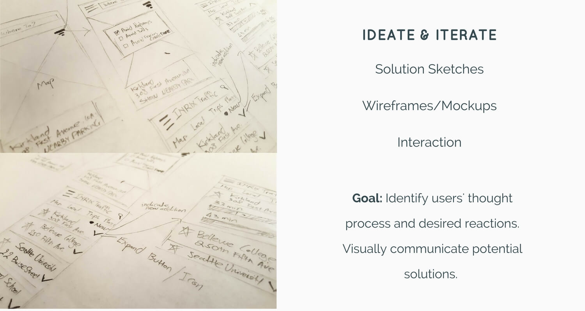
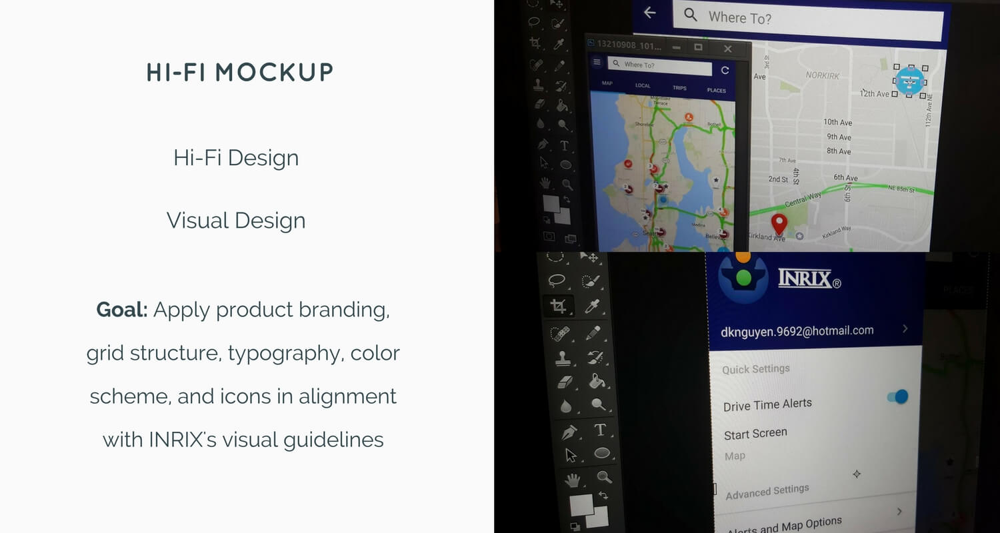
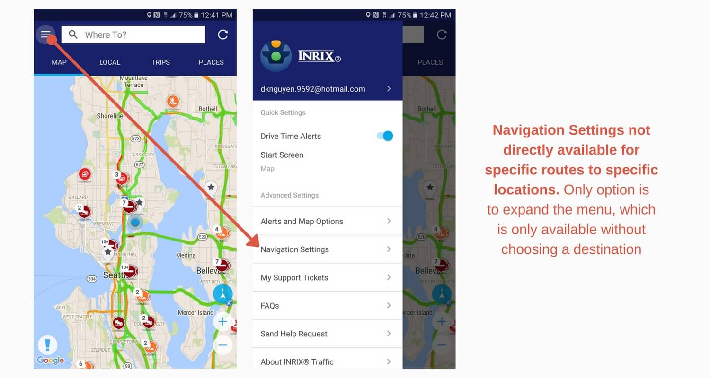
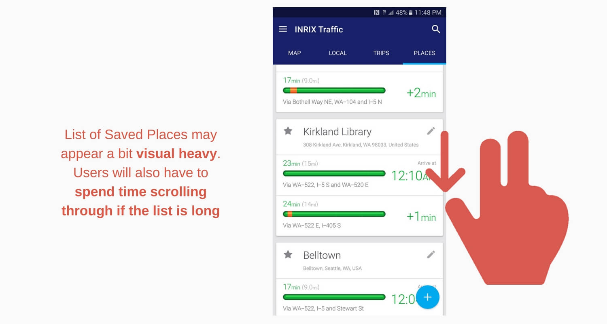
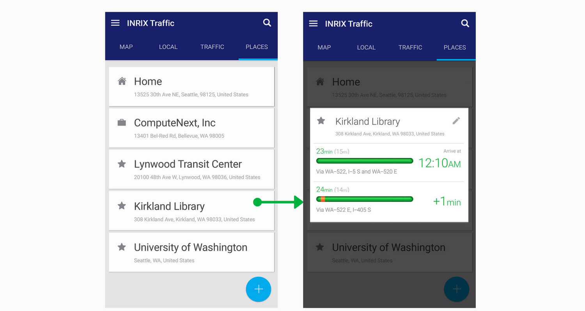

Vision-led design
In May 2016, I had the chance to attend a Product Design workshop which focuses on the topic of "Aligning Organizational Vision With Product Design". The objective of the workshop is to train designers in the art of designing better products while simultaneously and fully optimizing the organizational vision as a solid foundation to base off their design decisions.
As part of the workshop, a redesign project was conducted. Essentially, we had to pick one product of choice and take it through a quick design process in order to uncover a small sample of usability issues, and accordingly produce a set of redesign ideas in order to solve these issues.
Cars and data: It's my thing
For my product of choice, I've decided to pick INRIX Traffic: a mobile app that optimizes traffic and GPS data from a global network of over 250 million connected vehicles, roadways and cities, in order to improve users' commute by providing the best routes and directions to new and familiar destinations. I've always been a big fan of cars and automobiles, and recently I've discovered an interest for Big Data and Machine Learning. Combining these components together - along with my work in Product Design - and the decision to challenge myself with a traffic navigation app is almost a no-brainer. Note that for the purpose of this project, only the Android version of the app was used.
(Picture from INRIX)
The process
Unlike Google Maps, whose goal is to provide users with an end-to-end physical information-accessing platform, INRIX Traffic's primary objective is to offer drivers (and specifically drivers only) a tool that can help them make better driving decisions with the help of real-time traffic information. As such, the app should be optimally designed so that it is quick and easy to use. Furthermore, this quick and easy characteristic should also be prioritized under the objective of helping drivers focus on the road rather than their phone screens. Number of steps to complete a task should be kept to the minimum, and design components should be as intuitive and efficient as possible. In the words of Bryan Mystele, President and CEO of INRIX:
"We designed INRIX Traffic with one specific vision: To help drivers move through their daily lives as quickly and efficiently as possible".
In this respect, my underlying goal was to identify usability issues that may not align with this product vision, and ultimately come up with potential solutions. Below is summary of the process:
 The solutions (and their original issues)
Through a combination of Heuristic Analysis and Usability Interviews (and Test), these were revealed to be the most important issues:
Issue 1
Ineffective Feedback After Adding A New Trip
As a suggestion, the calendar should jump to the corresponding date on which this trip was set up for after it was added.
Issue 2
Navigation Settings Not Available For Individual Route

I suggest that users should be able to apply Navigation Settings for each specific route. One way to do this is by implementing a "Filter" button that is always accessible on the map so users can change their Navigation Settings wherever and whenever.
Issue 3
Heavy Information and Unclean Layout On "Places" Screen
A potential solution for this scenario would be to consider hiding traffic information under its corresponding destination using the "Pop-Up, Pop-Down" functionality (i.e. if a user wants to see traffic information for Kirkland Library, he/she can tap on Kirkland Library and open a pop-up box which contains the relevant data, and accordingly tap anywhere to close the pop-up).
Other suggestions
Lastly, a number of minor suggestions that can be optimized to improve the overall INRIX Traffic App experience.
- Consider exploring other icon designs for "Compass" and "Route" on the "Map" screen which are more intuitive to users - thereby improving usage recognition.
- When adding a new destination on the "Places" screen, consider exploring another icon design for "Other" that are more intuitive to users - rather than "Star". Again, usage recognition is potentially enhanced.
- Consider redesigning the "Line Bars" which represent the traffic condition of potential routes to take. Many participants from the interview have expressed that the current design may seem a bit old-fashioned and unclean. Material Design could be explored for its minimalist &and clean concept.
Reflection
Coming to this workshop, I haven't had a lot of forays into the field of Product Design within the professional world. While I've worked on various school projects before, the context for me has never been of a designer working for a company that has a specific vision for their products. Taking this workshop has solidly embedded that mindset into my perspective.
Perhaps very importantly, it became apparent to me through this experience how important design is within a company's success. In its essence, design helps to simplify the process of delivering a company's vision to its end-users. While the core intelligence of the product lies in its engineering, it is design that translates the often complex language of the product's technology into something that users understand and can relate to. A favorite quote from an experienced designer whom I had a chance to meet at the workshop:
"All companies build products that are meant to simplify people's lives. But it is the designers who simplify that process of simplification".